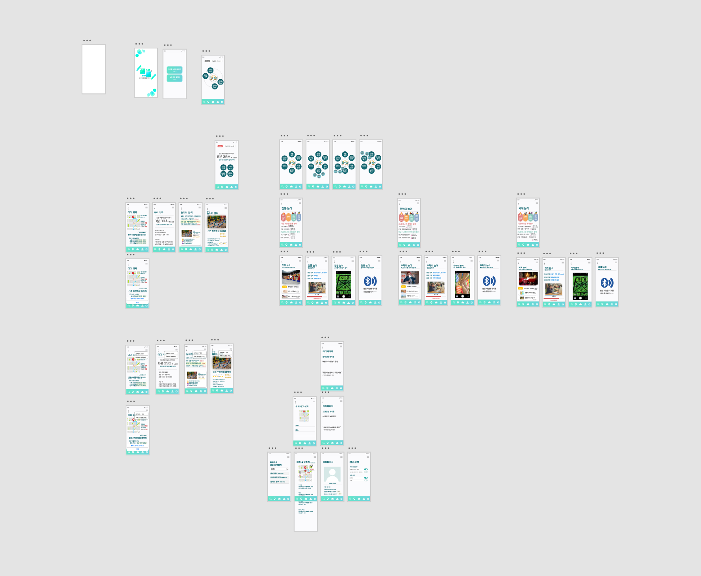

Yonsei–Nexon RC Creative Platform Contest
Yonsei University · 2021
A creative-platform contest hosted by Yonsei University and Nexon. Centered on children's play culture during the pandemic era, the team proposed a platform service combining the benefits of outdoor play with the advantages of an app-based service.


After COVID-19, children's outdoor activity declined while digital device use increased, making accessible information about safe play spaces — and the protection of children's right to play — an increasingly important issue; a preliminary survey confirmed caregivers' concerns about rising screen time and decreasing outdoor play. At the same time, information about playground locations, facility types, usage conditions, and safety was scattered and hard to find in one place, and field research revealed aging facilities and safety issues at some playgrounds. The project therefore proposed a digital playground platform providing location and facility information while letting users share on-the-ground updates themselves, combined with AR-based play content — so that digital technology would not replace outdoor play, but instead encourage new offline play experiences and participation.
This was the very first project I started, right at the beginning of my first semester as an undergraduate. With COVID-19 making it hard to even meet or connect with fellow freshmen, I wanted to take on something meaningful at a time when platform-based services were on the rise. Students from a range of majors came together to learn everything from programming to UI design, and this project was the result of that collaboration. Through it, I learned that building a service isn't about jumping straight to implementation — it's about researching the real problems users face first, and translating those findings into concrete features.